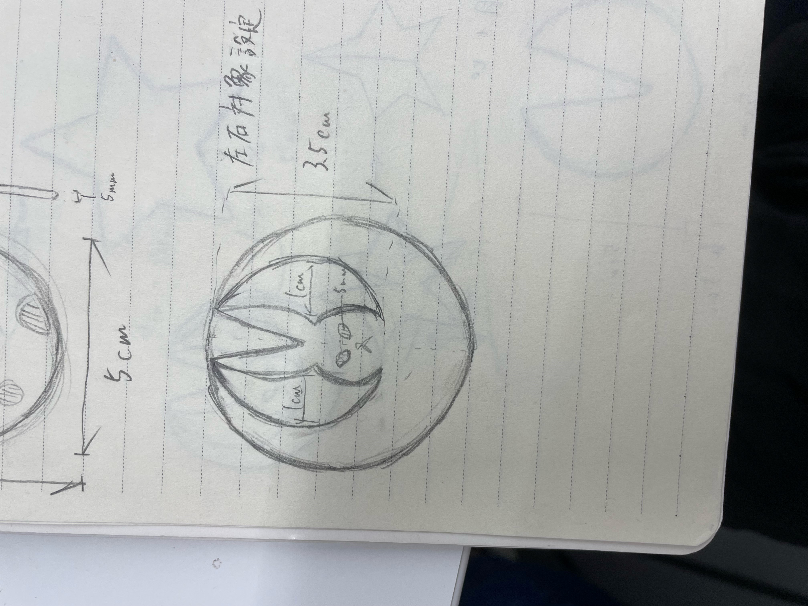

デジタルファブリケーション
第2回 レーザーカッター
うさぎのピンセット
月にいるうさぎのピンセットを作ってみました。

自分の書いた下絵をfusion360の画像挿入機能を使って取り込みなぞって設計図を描き、３Dプリンターでプリントしました。
出来上がりましたがフィラメント部分が多すぎるのか硬く、全く物をつかめずピンセットとしての意味をなしませんでした。涙
感想
硬すぎてつかめなかった理由として月の部分のフィラメントが多い＋厚いと思いました。
月の部分に所々開けてクレーターを表現したり厚さをもう少し薄くさせたらピンセットとして機能してくれるかもしれません。
また、下絵の線がガタガタになってしまったのでどうしたらもっと綺麗な直線と曲線がかけるのか研究していきたいと思います。